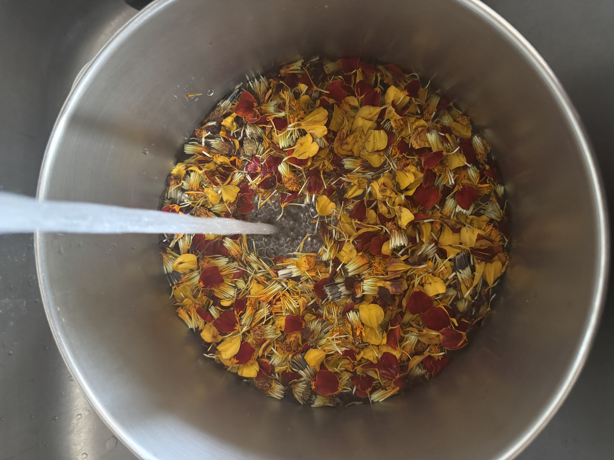
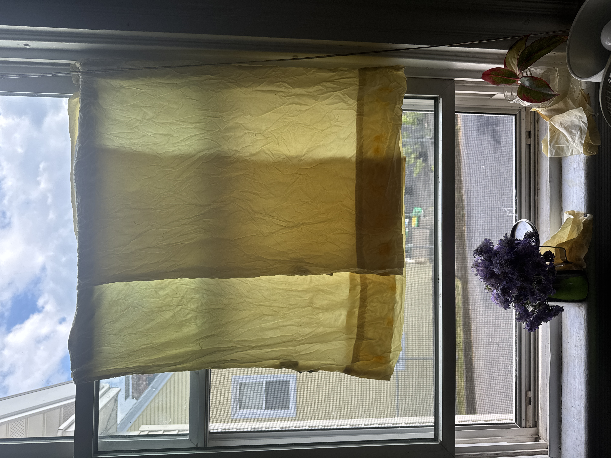
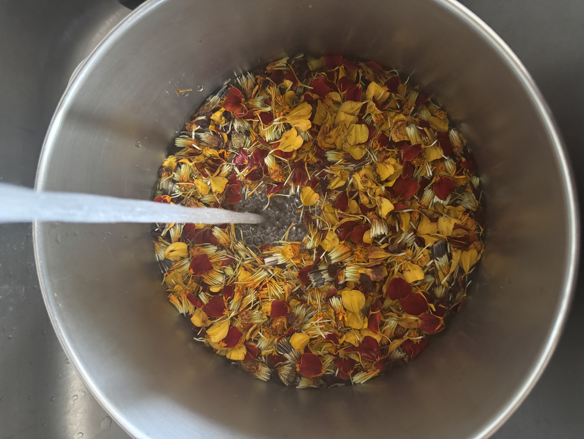
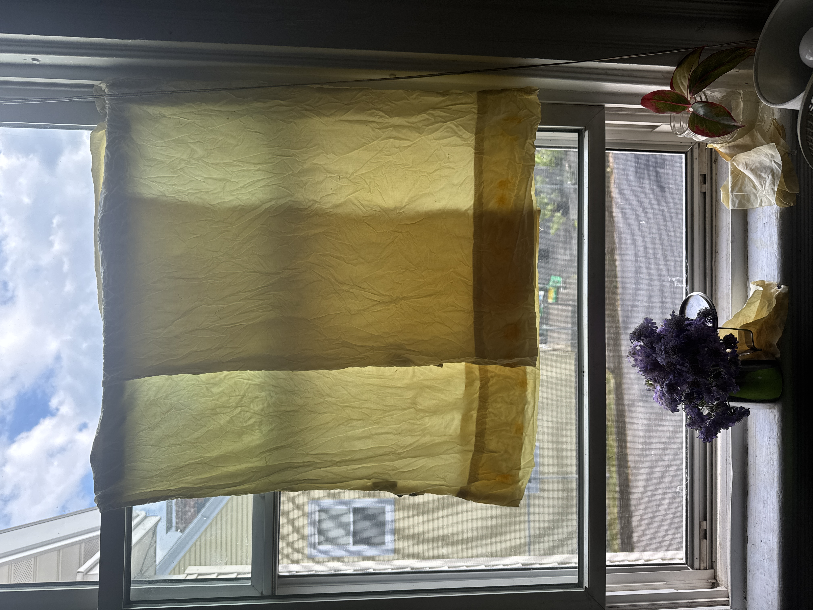

archive
updates from the garden, experiments, and findings
updates from the garden, experiments, and findings
 



Making of marigold dye and dyeing fabric. June 2025

Hardening off marigold seedlings. April 2025
Making of avocado pit dye. February 2025

Hopi Black Dye Sunflower harvesting. October 2024